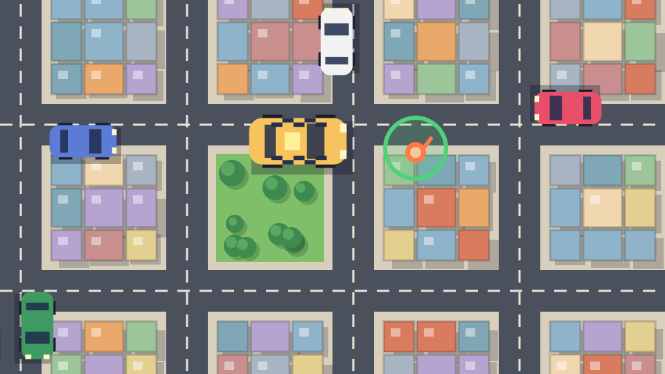

TaxiSim
Maneja un taxi por Ciudad Benedetto de 08:00 a 20:00: recoge pasajeros, llévalos a tiempo y sin choques, carga combustible y ahorra para mejorar tu auto.
Se juega en ordenador con teclado, o en el celular y la tablet con botones táctiles.

Un turno en la ciudad
- Pasajeros que hacen señas. Detente a su lado para que suban y te digan a qué calle van.
- Taxímetro. Cobras una bajada de bandera más cada cuadra recorrida.
- Estrellas y propinas. Llegar a tiempo y sin choques sube tus estrellas; los pasajeros contentos dejan propina.
- Pasajeros distintos. Los apurados pagan más pero exigen rapidez; los turistas tienen paciencia.
- Tráfico. Autos que circulan por su carril, doblan en los cruces y frenan si te cruzas.
- Combustible. Carga en las estaciones rojas; si te quedas sin nada, la grúa cobra.
- De día a noche. El turno avanza hasta que se encienden los faroles.
- Taller. Con tus ahorros mejora el motor, el tanque y la suspensión.
Mandos
↑W Acelerar
↓S Frenar y marcha atrás
←→ Girar
Espacio Freno de mano
H Bocina
M Sonido
P Pausa
En el celular
◀▶ Girar, abajo a la izquierda
GasFreno Abajo a la derecha